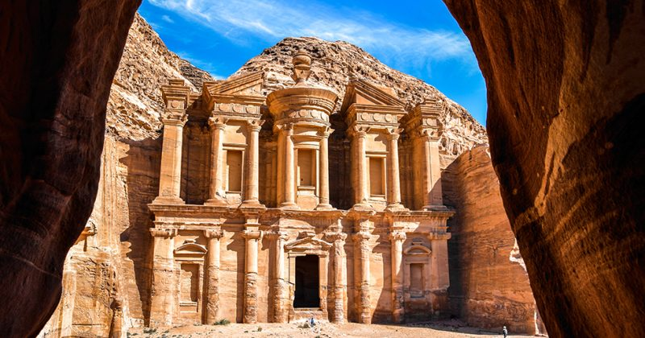

Petra
Petra es conocida como la ciudad perdida porque si bien su historia se remonta a la época de los nabateos, en el siglo VII a.C, en la Edad Media ya fue completamente abandonada y no fue «descubierta» por los occidentales hasta principios del siglo XIX.
En concreto, fue el explorador suizo Johann Ludwig Burckhardt quien en 1812 consiguió que los habitantes locales le llevaran a conocer esa ciudad perdida de la que se hablaba.
Entusiasta de la cultura árabe, antes se convirtió a la religión musulmana y se cambió el nombre por el de Ibrahim Ibn Abd Allah, lo que le permitió ganarse la confianza necesaria para ser conducido hasta Petra.
